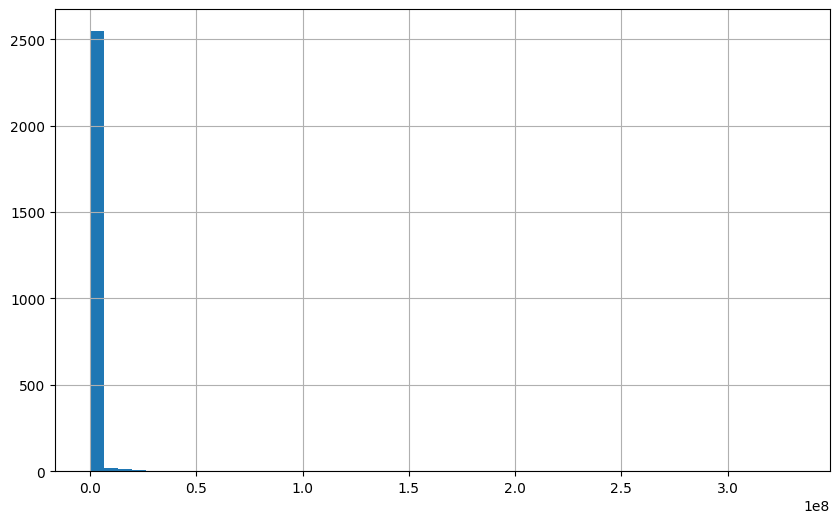

from arcgis.gis import GIS
gis = GIS("home")Ashleigh Frank GSIC 6317
Lab 8 Homework
Undergrad & Grad
- Make a new ArcGIS Notebook and save it as Lab8HW_yourname
- Write code to make a webmap centered on downtown Fort Worth, TX using the satellite basemap.
- Write code to make a webmap centered on the contiguous US, and add the latest COVID-19 case data.
3.1 Use the Python API to search ArcGIS Online for an external layer (“Feature Layer”) owned by CSSE_covid19 (Johns Hopkins) titled “COVID-19 Cases US”
- Using the same layer as #3, write code to make a new webmap that displays Texas County COVID Deaths
4.1 Filter to just Texas counties (Province_State=‘Texas’)
4.2 Use a ClassedSizeRenderer on the “Deaths” field
Just Grad
In the same notebook, also add:
- Write code to make a webmap of parcel data
5.1 Upload parcels.csv to your notebook (Go to Files->home and upload the CSV there)
5.2 This location can be referenced in ArcGIS Notebooks as “/home/parcels.csv”
5.3 Use a Unique Value SEDF renderer to color the parcels by school zone (“CAMPNAME”)
- Use pandas to make a histogram of the parcel market values (“market_value” field) [See Lab 5].
- Write code to make a new webmap of parcels colored by market value
7.1 Use Class Breaks color renderer with natural-breaks classification and 7 classes
7.2 Use the dark-grey basemap
7.3 Add a legend
# Write code to make a webmap centered on downtown Fort Worth, TX using the satellite basemap.
mapFW = gis.map("Fort Worth, TX", "satellite")
mapFW#Write code to make a webmap centered on the contiguous US, and add the latest COVID-19 case data.
# Use the Python API to search ArcGIS Online for an external layer ("Feature Layer") owned by CSSE_covid19 (Johns Hopkins) titled "COVID-19 Cases US"
# Search for COVID-19 Cases US layer from Johns Hopkins
from arcgis.features import FeatureLayer
covid_search = gis.content.search(query="title:COVID-19 Cases US, owner:CSSE_covid19", outside_org=True)
#second on the covid search list
covid_item = covid_search[1]
mapFW.content.add(covid_item)# Using the same layer as #3, write code to make a new webmap that displays Texas County COVID Deaths
# Filter to just Texas counties (Province_State='Texas')
# Use a ClassedSizeRenderer on the "Deaths" field
mapTX = gis.map("Texas")
covid_layer = FeatureLayer(covid_item.url + "/0")
#texas query
texas_query = covid_layer.query(where="Province_State='Texas'", out_fields="*")
# Define a ClassedSizeRenderer for Deaths field
classed_size_renderer = {
"type": "classBreaks",
"field": "Deaths",
"classificationMethod": "natural-breaks",
"minValue": 0,
"classBreakInfos": [
{
"classMinValue": 0,
"classMaxValue": 100,
"symbol": {
"type": "esriSMS",
"style": "esriSMSCircle",
"color": [255, 0, 0, 128],
"size": 4
}
},
{
"classMinValue": 101,
"classMaxValue": 500,
"symbol": {
"type": "esriSMS",
"style": "esriSMSCircle",
"color": [255, 0, 0, 128],
"size": 8
}
},
{
"classMinValue": 501,
"classMaxValue": 1000,
"symbol": {
"type": "esriSMS",
"style": "esriSMSCircle",
"color": [255, 0, 0, 128],
"size": 12
}
},
{
"classMinValue": 1001,
"classMaxValue": 5000,
"symbol": {
"type": "esriSMS",
"style": "esriSMSCircle",
"color": [255, 0, 0, 128],
"size": 16
}
},
{
"classMinValue": 5001,
"classMaxValue": 999999,
"symbol": {
"type": "esriSMS",
"style": "esriSMSCircle",
"color": [255, 0, 0, 128],
"size": 20
}
}
]
}
# Add the layer with definition query for Texas and the renderer
mapTX.content.add(texas_query, options={"renderer": classed_size_renderer})
# Display the map
mapTX# Write code to make a webmap of parcel data
# This location can be referenced in ArcGIS Notebooks as "home/parcels.csv(1)"
# Use a Unique Value SEDF renderer to color the parcels by school zone ("CAMPNAME")
import pandas as pd
parcels_df = pd.read_csv("home/parcels(1).csv")
# print(parcels_df.head()) # checking dataframe for long and lat
parcels_sedf = pd.DataFrame.spatial.from_xy(parcels_df, x_column='x', y_column='y')
parcel_map = gis.map("Richardson, TX")
# Create a Unique Value renderer for CAMPNAME field
unique_camps = parcels_sedf['CAMPNAME'].unique()
colors = [
[255, 0, 0, 200], [0, 255, 0, 200], [0, 0, 255, 200],
[255, 255, 0, 200], [255, 0, 255, 200], [0, 255, 255, 200],
[255, 128, 0, 200], [128, 0, 255, 200], [0, 128, 255, 200]
]
# Build uniqueValueInfos
unique_value_infos = []
for idx, camp in enumerate(unique_camps):
color = colors[idx % len(colors)]
unique_value_infos.append({
"value": str(camp),
"symbol": {
"type": "esriSMS",
"style": "esriSMSCircle",
"color": color,
"size": 8,
"outline": {
"color": [0, 0, 0, 255],
"width": 0.5
}
},
"label": str(camp)
})
unique_renderer = {
"type": "uniqueValue",
"field1": "CAMPNAME",
"uniqueValueInfos": unique_value_infos,
"defaultSymbol": {
"type": "esriSMS",
"style": "esriSMSCircle",
"color": [128, 128, 128, 200],
"size": 8,
"outline": {
"color": [0, 0, 0, 255],
"width": 0.5
}
}
}
parcels_sedf.spatial.plot(
map_widget=parcel_map,
renderer=unique_renderer
)
parcel_map# Use pandas to make a histogram of the parcel market values ("market_value" field) [See Lab 5].
import pandas as pd
parcels_df = pd.read_csv("home/parcels(1).csv")
parcels_df.info()
# Create a histogram of market values using pandas
parcels_df['market_value'].hist(bins=50, figsize=(10, 6))<class 'pandas.core.frame.DataFrame'>
RangeIndex: 2597 entries, 0 to 2596
Data columns (total 7 columns):
# Column Non-Null Count Dtype
--- ------ -------------- -----
0 street_address 2597 non-null object
1 living_area 2597 non-null int64
2 state_code 2597 non-null object
3 market_value 2597 non-null int64
4 CAMPNAME 2597 non-null object
5 x 2597 non-null float64
6 y 2597 non-null float64
dtypes: float64(2), int64(2), object(3)
memory usage: 142.2+ KB
# Write code to make a new webmap of parcels colored by market value
# Use Class Breaks color renderer with natural-breaks classification and 7 classes
# Use the dark-grey basemap
# Add a legend
import pandas as pd
# Load CSV
parcels_df = pd.read_csv("home/parcels(1).csv")
# Convert to spatially enabled dataframe
parcels_sedf = pd.DataFrame.spatial.from_xy(parcels_df, x_column='x', y_column='y')
# Create the map with dark-gray basemap
map_parcels = gis.map("Plano, Texas","dark-gray")
# Define a Class Breaks renderer for market_value with 7 classes
# Using natural breaks classification
# Calculate natural breaks for 7 classes using quantiles
breaks = [
parcels_df['market_value'].min(),
parcels_df['market_value'].quantile(0.14),
parcels_df['market_value'].quantile(0.29),
parcels_df['market_value'].quantile(0.43),
parcels_df['market_value'].quantile(0.57),
parcels_df['market_value'].quantile(0.71),
parcels_df['market_value'].quantile(0.86),
parcels_df['market_value'].max()
]
colors = []
for i in range(7):
# Interpolate from yellow [255, 255, 178] to dark red [77, 0, 38]
ratio = i / 6 # 0 to 1
r = int(255 - (255 - 77) * ratio)
g = int(255 - (255 - 0) * ratio)
b = int(178 - (178 - 38) * ratio)
colors.append([r, g, b, 200])
class_break_infos = []
for i in range(7):
class_break_infos.append({
"classMinValue": breaks[i],
"classMaxValue": breaks[i + 1],
"label": f"${int(breaks[i]):,} - ${int(breaks[i + 1]):,}",
"symbol": {
"type": "esriSMS",
"style": "esriSMSCircle",
"color": colors[i],
"size": 6,
"outline": {"color": [0, 0, 0, 255], "width": 0.5}
}
})
class_breaks_renderer = {
"type": "classBreaks",
"field": "market_value",
"classificationMethod": "esriClassifyNaturalBreaks",
"minValue": breaks[0],
"classBreakInfos": class_break_infos
}
parcels_sedf.spatial.plot(
map_widget=map_parcels,
renderer=class_breaks_renderer
)
#legend
map_parcels.legend.enabled = True
# Display the map
map_parcels